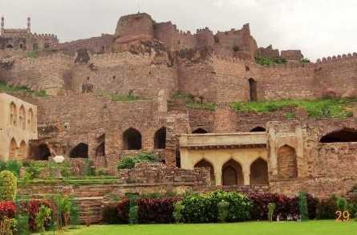

Golconda Fort
Golconda Fort is a historic fortress and citadel located in Hyderabad, Telangana, India. It was the capital of the medieval Golconda Sultanate and is known for its architecture, history, and acoustics.
Location: Golconda, Hyderabad, Telangana, India
Ticket Price: INR 15 for Indian citizens, INR 200 for foreign tourists
Transportation: Accessible by road, well-connected by local buses and taxis.